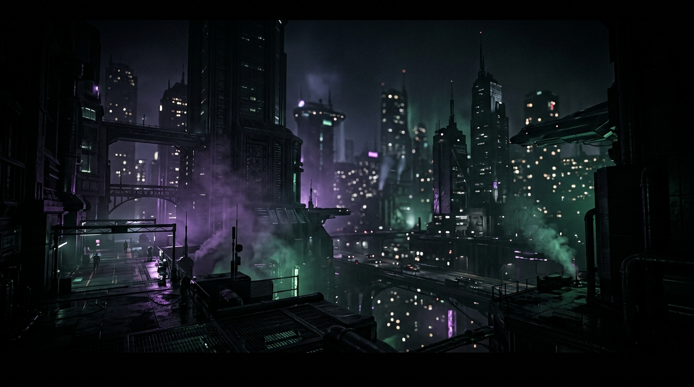
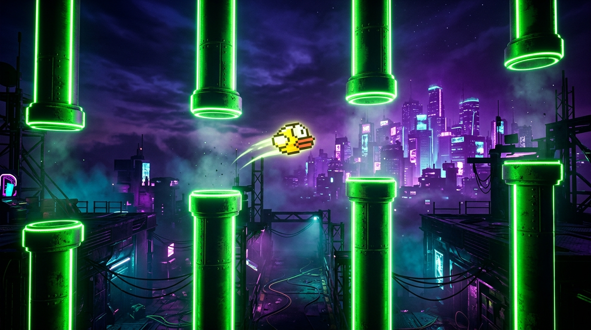
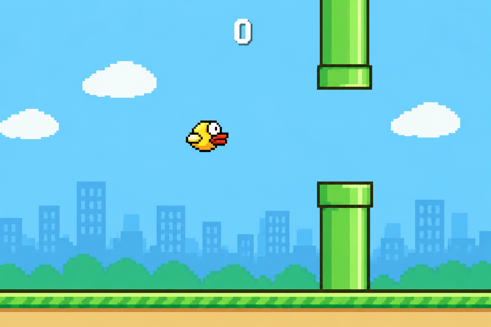

02 / UNREAL ENGINE 5 · BLUEPRINT & PHYSICS LAB
FLAPPY BIRD
An engineered Unreal Engine 5 prototype featuring deterministic jump impulse physics, pooled pipe actors with zero garbage collection hitching, and fair collision box budgeting.

About the Project
About the Project

This is my own remake of the classic Flappy Bird game, made in Unreal Engine. It has a pixel-style bird, green pipes, and a city skyline background, just like the original mobile game.
What I Wanted to Learn
I wanted to learn how jump and gravity physics work, how to spawn obstacles automatically, and how to make a simple 2D-style arcade game feel fun to play.
02 / Key Mechanics
Game Features
03 / Problems Solved
Problems I Faced
04 / Key Takeaways
What I Learned
05 / Project Renders & Architecture
Inside The Build.
Drag left or right, or scroll horizontally to inspect Blueprints, wireframe debug collision viewports, and volumetric night lighting.
05 / OUTCOME & REFERENCES
FINAL RESULT
A simple, working Flappy Bird clone built in Unreal Engine, with jump physics, scrolling pipes, and a score system, just like the original game.
Unreal Engine 5: Flappy Bird Blueprint Guide
Complete walkthrough on PaperZD character blueprints, 2D viewport camera setup, vertical jump velocity impulse, and terminal velocity clamps.
Actor Object Pooling & Zero GC Lag in UE5
Architecture teardown on pre-allocating obstacle actor pools and cycling off-screen actors to eliminate garbage collector hitching and preserve 60 FPS.
Hitbox Forgiveness & Fair Collision Bounds
Deep-dive into player perception vs pixel collision boundaries: why shrinking hitboxes by 15% creates edge-of-the-seat near misses instead of frustration.